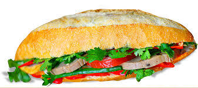

Ingredients
- Bread: Crusty bread
- Spices: Mayo/ Chili
- Pate : Pork/ Chicken
- Veggies: Pickled Carrots/ Cilantro/ Coriander
- Meat: Vietnamese Meatball/ Chicken/ Pork
- Toppings: Sausages/ Eggs
How to do
- Slicing Bread: Split the roll down the top middle (not along the side like you’d normally do)
- Start Your (Easy!) Bread: Smear with pate then mayo on one side (both if you’re feeling super indulgent)
- Meat And Veggies: Jam in the ham, cucumber strips, carrot, green onion, then lastly coriander/cilantro
- Top It Off: Finish with topppings, a sprinkle of chilli (go hard or go home!) and a little sprinkle of Maggi Seasoning (about 1/2 tsp)